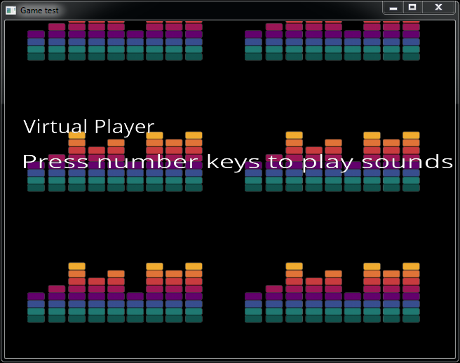

When developing new applications or tiny games with SDL, OpenGL or small3D, a requested and valuable feature is adding sound effects, raising alarms or creating new atmospheres. With this feature in mind and thanks to the work of FMOD and Miguel Hernando we announce today a new block that incorporates all the functionality to your project: EasySound.
What does fmod do?
EasySound wraps the main functionality of the low-level fmod api and can deal with different kinds of sound files and formats: mp3, wav, ogg. FMOD is an audio tool developed by Firelight Technologies focused on the development of professional video games. It has been used in over 2000 games and has integration with well-known game engines such as Unity or Havok.

At EasySound block, there is a simple class called EasyPlayer which is a very straightforward way to handle sounds.
Developing a Virtual Player
We’ll develop a simple application using EasySound to make a virtual player with your keyboard, similar to sound keyboards used for live radio streams. This application uses SDL to show the simplicity of incorporating sounds into a game. It also handles key interruptions from keyboard making this project multi-platform compatible.
To start this new project create a block with the simple layout and place a main.cpp inside:
1 2 3 | $ bii init easysound_example -L $ cd easysound_example $ # create main.cpp |
Now it’s time to create a new folder called “sounds” with plenty of sound files inside. You can find some sound effects here or use whatever you want. Add them to your biicode.conf [data] section, to create a link to the main file with your sound files.
1 2 | [data] main.cpp + sounds/wave.mp3 sounds/drumloop.wav sounds/d.ogg |
NOTE: Add a cool png image for the background of your app.
This way the sounds folder is copied to bin/your_user/easysound_example/sounds/… So you have to follow this path to refer to your sounds in your code.
Add some code to your main.cpp:
1 2 3 4 5 6 7 8 9 10 11 12 13 14 15 16 17 18 19 20 21 22 23 24 25 26 27 28 29 30 31 32 33 34 35 36 37 38 39 40 41 42 43 44 45 46 47 48 49 50 51 52 53 54 55 56 57 58 59 60 61 62 63 64 65 66 67 68 69 70 | #include "miguel/sdl_utils/SDLUsimpleGLApp.h" #include "miguel/easysound/EasyPlayer.h" #include "stdio.h" class VirtualPlayer: public SDLUsimpleGLApp { EasyPlayer myplayer; void onKeyboardDown(SDL_KeyboardEvent k) { switch(k.keysym.sym) { case SDLK_0: myplayer.playSound("Dani_MTB/easysound_example/sounds/jaguar.wav"); break; case SDLK_1: myplayer.playMusic("Dani_MTB/easysound_example/sounds/swish.wav"); break; case SDLK_2: myplayer.playSound("Dani_MTB/easysound_example/sounds/c.ogg"); break; case SDLK_3: myplayer.playMusic("Dani_MTB/easysound_exampe/sounds/drumloop.wav"); break; case SDLK_4: myplayer.playSound("Dani_MTB/easysound_example/sounds/d.ogg"); break; case SDLK_5: myplayer.playMusic("Dani_MTB/easysound_example/sounds/e.ogg"); break; case SDLK_6: myplayer.playSound("Dani_MTB/easysound_example/sounds/singing.wav"); break; case SDLK_7: myplayer.playMusic("Dani_MTB/easysound_example/sounds/standrews.wav"); break; case SDLK_8: myplayer.playSound("Dani_MTB/easysound_example/sounds/stereo.ogg"); break; case SDLK_9: myplayer.playMusic("Dani_MTB/easysound_example/sounds/wave.mp3"); break; } } bool setup() { setBackground(new SDLUslide(getTexture("Dani_MTB/easysound_example/sounds/background.png"))); return true; } void draw() { SDLUsimpleGLApp::draw(); } void loop() { SDLUsimpleGLApp::loop(); } } vPlayer; #ifdef __cplusplus extern "C" #endif int main(int argc, char** argv) { vPlayer.execute(); return 0; } |
Build your project:
1 2 3 | $ bii build $ cd bin $ # execute it |
As you can see, we just assigned sounds to the number keys on the keyboard. So just press the desired key and sound will come out immediately. You can play sounds simultaneously and create virtual effects. It is a great idea for musicians to create new atmospheres for their songs!
Open and build
I have developed my own virtual player, so just check Dani_MTB/easysound_example to see how it works:
1 2 3 4 5 6 | $ bii init myproject $ cd myproject $ bii open Dani_MTB/easysound_example $ bii build $ cd bin $ # execute it! |

You can see another example at block miguel/test_easysound or develop your own application with #include miguel/easysound using the class EasyPlayer.
Go ahead and give sound to your projects!
IMPORTANT: FMOD is free to use for not commercial purposes. Please, check the fmod LICENSE when using this software.
Related Posts